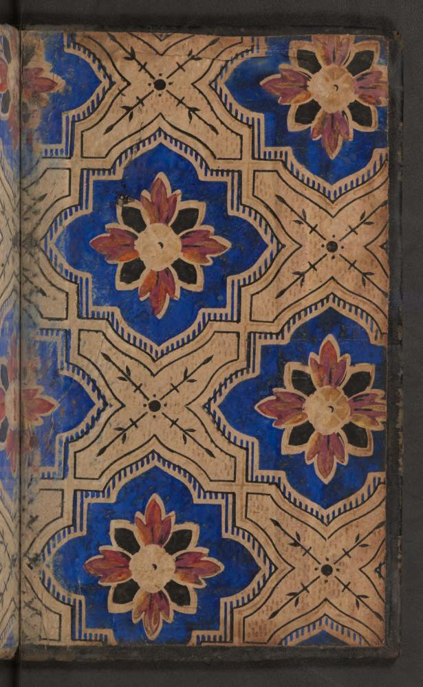
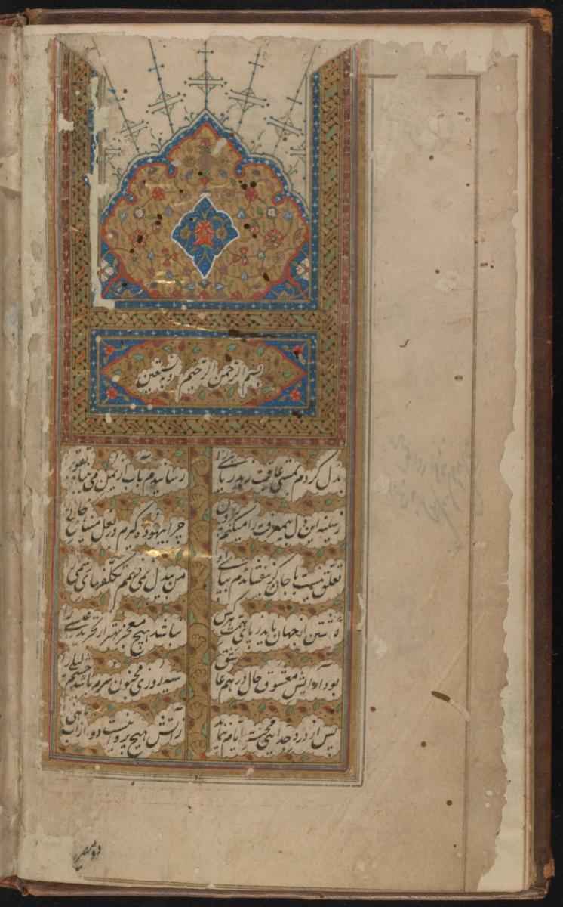
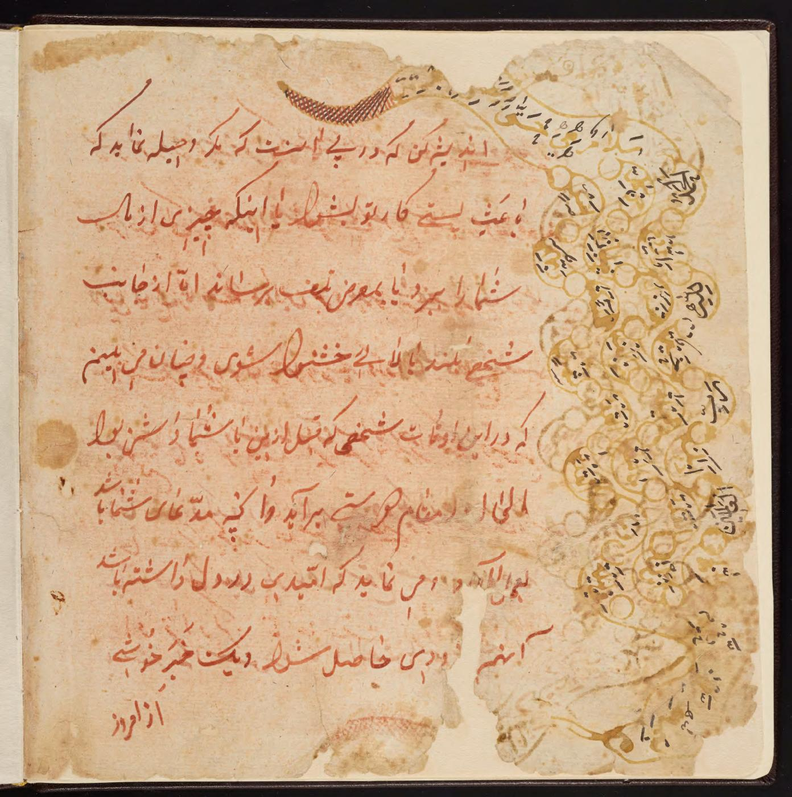
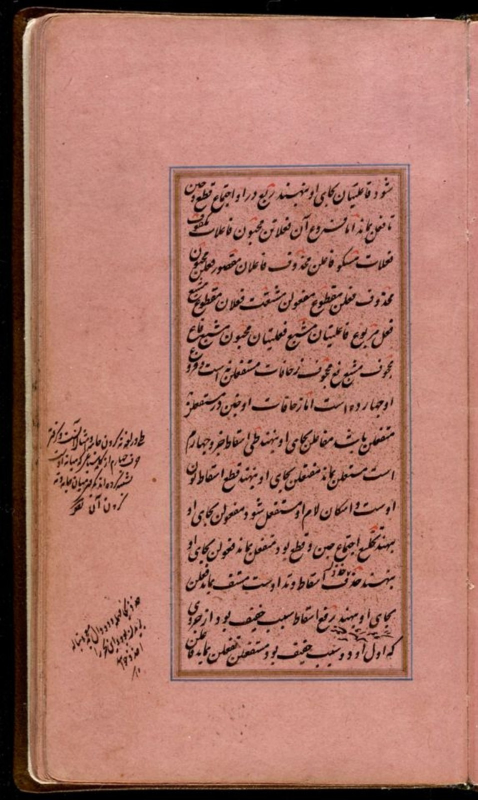
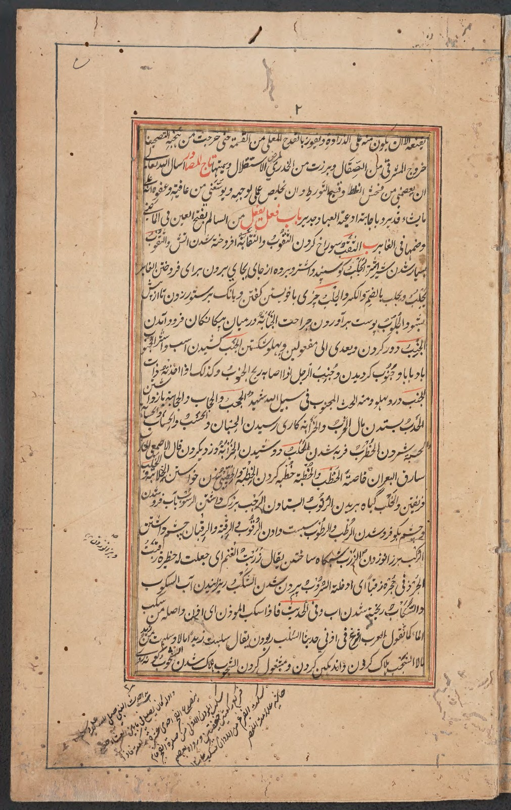
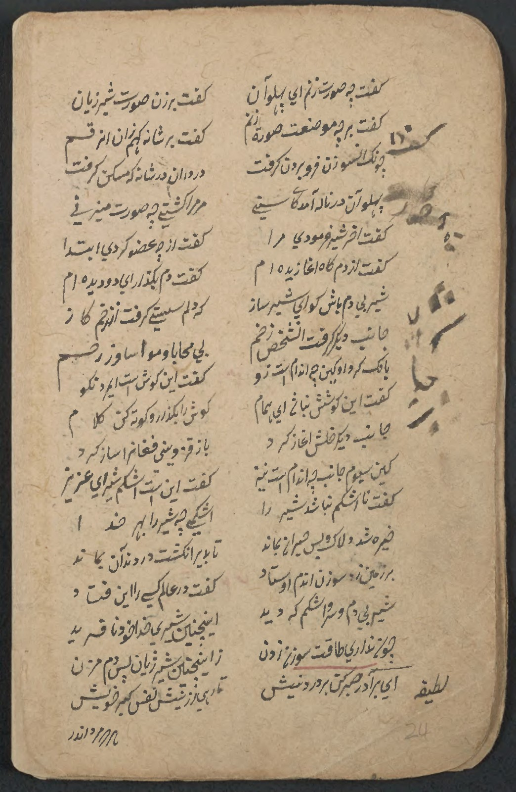
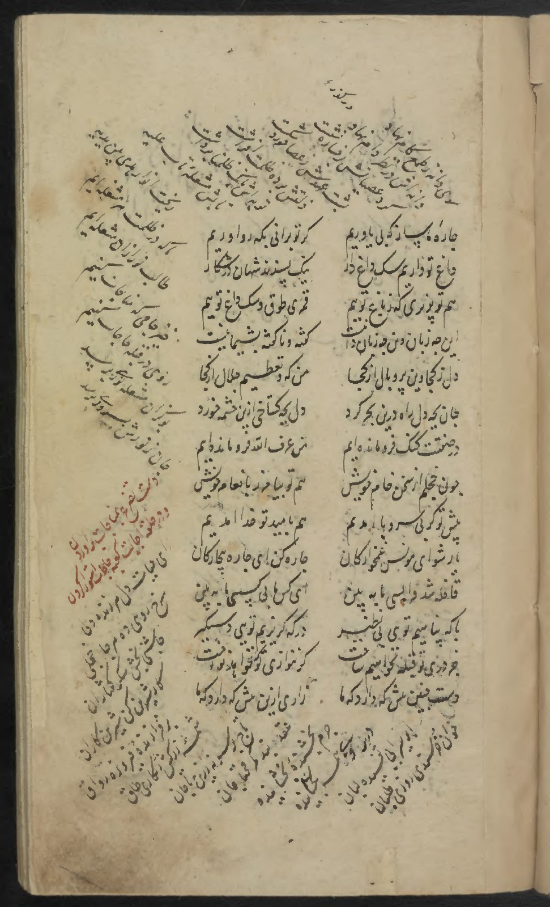
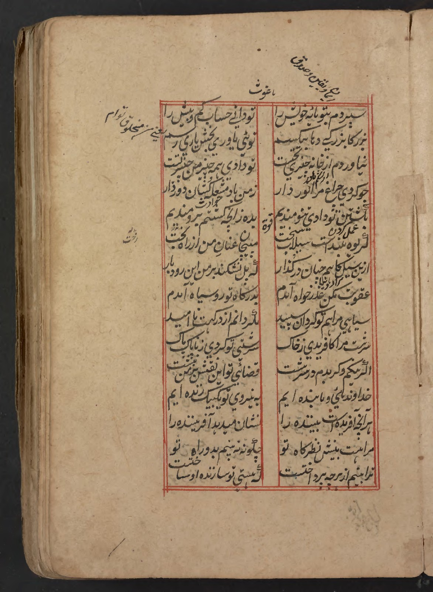
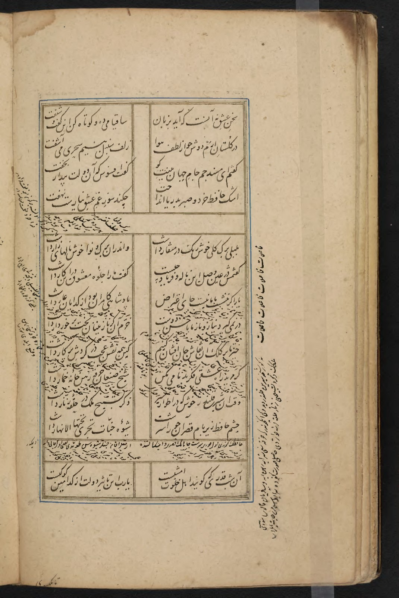

Pattern & repetition
Khāvarānʹnāmah →
A cobalt floral endpaper. Repeated shapes turn the opening of a book into a carefully ordered surface.
PDF page 3
READING, INTERPRETATION & THE LIFE OF A TEXT
A text continues in the encounter with its readers: in their questions, interpretations, and the notes they leave beside it.
Ḥāshiyeh-nevīsī—writing in the margin—makes a reader’s understanding visible beside a text. An explanation, a question, or an alternative reading gives the next reader another way into the work. The page carries both the text and traces of its reception.
In the Persian Peck Shahnama, marginal notes explain unfamiliar words and preserve alternative verses. Louise Marlow describes how these additions helped later readers encounter the poem through their own language and experience. Read the Princeton essay ↗
I see a connection here with knowledge management: making an insight explicit, keeping it connected to its source, and allowing others to revisit and develop it. This is a contemporary way of reading the practice, rather than a claim that it was the same as the modern discipline.
For me, the margin is also an invitation to keep a scientific notebook: to connect ideas, question assumptions, and make interpretations open to discussion. It speaks to my interest in normative systems, where the relationship between a rule, its interpretation, and the reasons for applying it matters.
Writing, ornament, and annotation offer different ways into a manuscript. These pages invite attention to each; decorative borders and blank margins are not themselves marginal commentary.

Pattern & repetition
A cobalt floral endpaper. Repeated shapes turn the opening of a book into a carefully ordered surface.
PDF page 3

An illuminated opening
An illuminated heading above columns of Persian verse, with generous margins around the writing.
PDF page 8

Writing in the margin
Red Persian handwriting appears alongside an ochre margin containing further annotations.
PDF page 11

Beside the frame
Two compact notes occupy the left margin of a rose-coloured page, outside the ruled text panel.
PDF page 15

Below the last line
A cluster of slanting notes extends beneath the framed text, with a shorter annotation at the left.
PDF page 8

A page with several orientations
Notes run beside and below a red-bordered text panel, changing direction to occupy the available space.
PDF page 8

Marks beside the verse
Bold markings occupy the right margin beside paired lines of verse; smaller writing appears near the foot of the page.
PDF page 25

Writing turned sideways
Vertical writing runs along the left edge of the verse, while a line near the top is heavily overwritten.
PDF page 158

Between and around the lines
Small additions appear between the larger lines and near the edges, alongside a crossed-through passage and red headings.
PDF page 15

Verse around verse
Slanting lines surround two central columns on three sides, with a red passage in the outer writing.
PDF page 14

Brief additions, open space
Short notes appear above and beside a red-ruled pair of verse columns, with smaller additions between lines.
PDF page 16

Across the boundaries
Fine writing fills spaces between verses, crosses ruled divisions, and continues down both outer edges.
PDF page 40
Verse around verse
Slanting lines surround two central columns on three sides, with a red passage in the outer writing.
PDF page 14
Brief additions, open space
Short notes appear above and beside a red-ruled pair of verse columns, with smaller additions between lines.
PDF page 16
Across the boundaries
Fine writing fills spaces between verses, crosses ruled divisions, and continues down both outer edges.
PDF page 40
Manuscript passages are shown in their original handwriting. The descriptions focus on visible features; readings and translations require separate verification. Source details accompany each page.